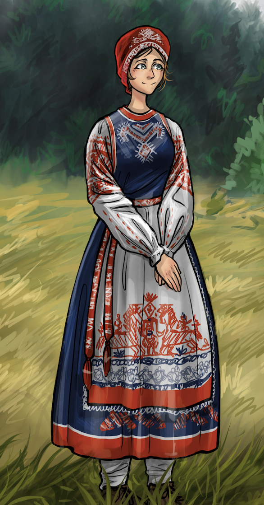

Включал льняную или холщовую рубаху свободного кроя, длинную широкую юбку из простого материала, передник или сарафан, длинный тонкий пояс, платок или повязку на голову и лапти. Широкая рубашка заправлялась в юбку длиной до пола. Сверху повязывали передник, который был чуть короче юбки и украшался вышивкой, кружевами или тканым орнаментом.
